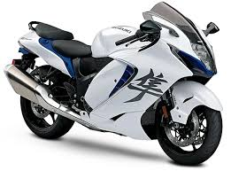
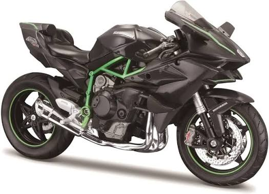
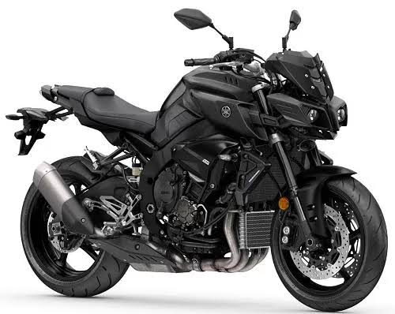
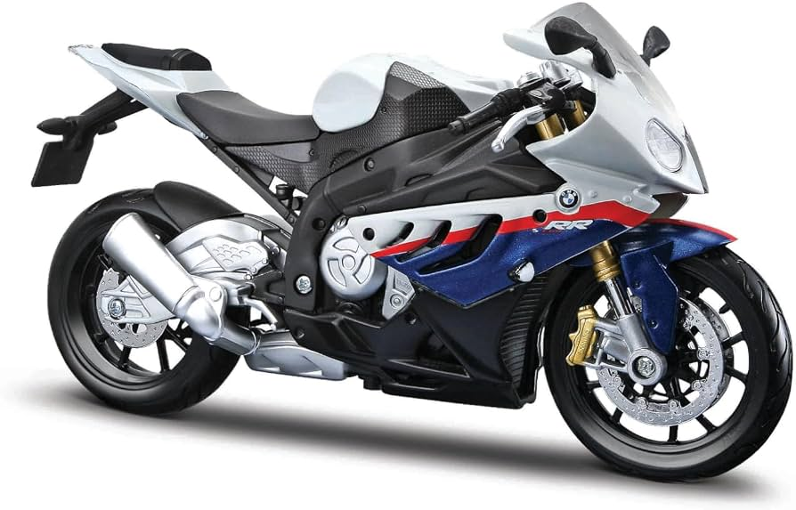

MOTOS DE CC ALTO
Hayabusa

La Suzuki GSX-1300R Hayabusa nació en 1999 con un propósito muy claro:
arrebatarle la corona de la velocidad a la Honda CBR 1100 XX Blackbird
y convertirse en la motocicleta de producción en serie más rápida del mundo.
El fabricante japonés bautizó a su creación como "Hayabusa", término que en japonés
significa halcón peregrino, un ave rapaz famosa por cazar precisamente mirlos (blackbirds)
y capaz de superar los 300 km/h en picada.
En su primera generación (1999-2007), la moto sorprendió al mercado con un motor de
1,298 cc y 175 caballos de fuerza. Su carrocería de diseño sumamente fluido y controversial no obedecía a modas estéticas,
sino a una aerodinámica casi perfecta probada en túneles de viento para cortar el aire a velocidades extremas.
Esta primera entrega alcanzaba una velocidad tope registrada de entre 303 y 312 km/h. Esta cifra asustó a los gobiernos
y legisladores europeos, lo que obligó a los principales fabricantes a firmar el famoso "Gentlemen's Agreement" (Acuerdo de Caballeros) en el año 2000, limitando electrónicamente la velocidad de todas las motos de producción a un máximo de 299 km/h para evitar prohibiciones legales
Volver al inicio
Kawasaki H2r

La Kawasaki Ninja H2R se presentó oficialmente al mundo el 30 de septiembre de 2014 durante el prestigioso salón de la motocicleta INTERMOT en Colonia, Alemania.
Tras causar un enorme impacto en la industria por su revolucionaria ingeniería, comenzó su comercialización y entregas globales en 2015.
Su desarrollo representó un proyecto histórico para la marca porque no se diseñó de forma aislada.
Kawasaki Heavy Industries unió a su división de motocicletas con sus divisiones de tecnología aeroespacial y de turbinas de gas para poder fabricar internamente el supercargador centrífugo y los alerones de fibra de carbono.
El nombre "H2" se eligió como un tributo directo a la legendaria Kawasaki H2 Mach IV de 1972, una motocicleta de dos tiempos que en su época revolucionó el mercado por su agresiva aceleración y velocidad. Gracias a este significado histórico, es de los pocos modelos que portan en el frente el "River Mark", un emblema exclusivo reservado para los desarrollos más importantes en la historia de la compañía.
Volver al inicio
mt-10

La Yamaha MT-10 es la motocicleta insignia de la línea Hyper Naked de Yamaha, diseñada bajo la filosofía "Dark Side of Japan" y apodada la reina del torque. A diferencia de la Kawasaki H2R, la MT-10 es una moto completamente homologada para la calle. Hereda el chasis Deltabox de aluminio y el motor de la superbike YZF-R1, pero modificados para ofrecer un rendimiento brutal y explosivo en regímenes medios y bajos, ideales para el uso diario y carreteras reviradas.
La Yamaha MT-10 se presentó formalmente al mundo el 17 de noviembre de 2015 durante el destacado salón internacional EICMA en Milán, Italia. Tras el enorme revuelo que causó su diseño inspirado en el anime robótico y sus brutales cifras, comenzó su comercialización y entregas oficiales en los mercados globales en mayo de 2016. (Nota: En América del Norte se vendió inicialmente bajo el nombre de FZ-10 hasta que Yamaha unificó la nomenclatura mundial como MT-10 en 2018)
Volver al inicio
s1000r

La BMW S 1000 RR se presentó originalmente al mundo en abril de 2008 en Múnich y comenzó su producción comercial en 2009. A diferencia de la Kawasaki H2R, es una superbike completamente homologada para la calle y nació con el objetivo de cumplir con la homologación del Campeonato Mundial de Superbike (WSBK). Su llegada revolucionó por completo el segmento porque BMW Motorrad era conocida únicamente por motos de turismo cómodas y motores bóxer, rompiendo con el dominio absoluto de las marcas japonesas al introducir tecnologías y potencias inéditas para la época.
frontal con faros asimétricos (apodada popularmente como la moto "bizca"). Esta decisión no fue estética, sino una estricta solución de ingeniería para reducir entre 300 y 500 gramos de peso, alojando las luces de cruce y carretera por separado según su necesidad de espacio. Aunque en generaciones actuales la marca unificó el diseño hacia ópticas LED gemelas y simétricas, el modelo ha mantenido una evolución constante. Su motor tetracilíndrico en línea de 999 cc incorpora la tecnología BMW ShiftCam de distribución variable, lo que le permite entregar 210 caballos de fuerza a 13,750 rpm y registrar una velocidad máxima oficial de 303 km/h
Volver al inicio
suzuki GSX-R1000

La legendaria superbike Suzuki GSX-R1000 se presentó formalmente al mundo a finales del año 2000 y comenzó sus entregas globales a principios de 2001. Su lanzamiento fue una auténtica bomba en la industria porque combinó la ligereza de un chasis de 750 cc con un motor de cilindrada grande que entregaba una potencia inédita para su época, aniquilando de inmediato a toda su competencia directa. El objetivo de Suzuki con este desarrollo fue sustituir a la vieja GSX-R 1100 y redefinir las reglas del Campeonato Mundial de Superbike (WSBK) y las carreras de resistencia, donde terminó cosechando decenas de títulos mundiales. Su herencia se mantiene vigente con la moderna GSX-R1000R, la cual incorpora un bloque de 999 cc dotado de un sistema de distribución variable (SR-VVT) derivado directamente de la alta competición de MotoGP. Esta variante deportiva entrega 202 caballos de fuerza, alcanza una velocidad máxima de 300 km/h, tiene un peso en orden de marcha de 203 kg y su precio de lista en México inicia en los $465,999 MXN
Volver al inicio